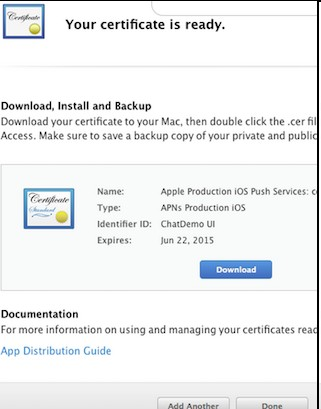

iOS上集成IM功能
集成前准备
到大数点开发者平台注册成为大数点合作伙伴并创建应用，每创建一个应用大数点平台会为其生成一个AppID和AppKey，AppID在大数点平台唯一标识一个应用，而AppKey可以被更新。AppID和AppKey将在您的代码里使用，保证您的应用与大数点平台间的安全传输。
若您还没有注册，请使用如下Demo App作测试：
Demo App:
AppID: 3_95F8TwKfyN7Lj35j8q_A
AppKey: ec55784a5db3268a下载SDK和Demo
制作并上传推送证书
如果不需要实现离线推送功能，请忽略这步
step1. 打开苹果开发者网站

step2. 从Member Center进入Certificates, Identifiers & Profiles

step3. 选择要制作的推送证书
- 对于开发环境(sandbox)的推送证书, 请选择 Apple Push Notification service SSL (Sandbox)
- 对于生产环境(production)的推送证书, 请选择 Apple Push Notification service SSL (Production)
step4. 选择对应的APP ID
step5. 根据Certificate Assistant的提示, 创建Certificate Request

step6. 上传上一步中创建的Certificate Request文件
step7. 上传完毕后, 推送证书就被正确生成了, 之后我们下载下来这个证书, 并双击导入系统

上传推送证书
step1. 打开Application –> Utilities –> Keychain Access应用, 我们会看到有刚刚我们制作好的推送证书。
step2. 打开浏览器进入大数点开发者平台
step3. 登录大数点开发者平台。
step4. 输入了正确的账号后, 选择对应的APP。
step5. 填写的证书名称。
这个名称是个有意义的名字, 与推送直接相关. 上传之前导出的P12文件, 密码则为此P12文件的密码, 证书类型请根据具体情况选择
创建的是Apple Push Notification service SSL Sandbox请选择开发环境; Apple Push Notification service SSL Production请选择生产环境)
step6. 上传
请注意正确选择是生产环境还是测试环境的证书
- 在您阅读此文档时，我们假定您已经具备了基础的 iOS 应用开发经验，并能够理解相关基础概念。
下载SDK
- 注: 由于iOS编译的特殊性，为了方便开发者使用，我们将i386 x86_64 armv7 armv7s arm64几个平台都合并到了一起，所以SDK的静态库(.a文件)比较大。实际集成编译出ipa后，根据调用功能的多少，实际只会增加2MB左右。
SDK目录讲解
从官网上下载下来的包中分为如下三部分：
第一部分：libdsd_im.a是ios的sdk静态库，将其直接导入到工程目录下即可使用。
第二部分：DSDIMClient.h是ios接口文件，里面有大数点IM提供的所有方法，将其直接导入到工程目录下即可使用。
第三部分：RELEASENOTE.md当前版本的SDK功能说明和更新说明。
配置工程
1.导入SDK
将下载好的SDK文件拖入到项目中，并勾选上Destination
2.设置工程属性
向Build Phases → Link Binary With Libraries 中添加依赖库

SDK依赖库有 libz.tbd.
集成SDK基础功能
SDK中的回调目前都是用代理实现的方法，方法简单易懂，方便用户实现各种回调的操作。
SDK中基本客户端类提供了基本的单播，组播，广播等一系列方法，同时客户端类也定义了一系列的协议用于回调，比如收到单播消息的回调，收到广播消息的回调。客户端类功能简单易懂且功能全面。
初始化SDK
/**
* 初始化sdk,退出时需要调用dsdDisConnect()来销毁分配得内存.
*
* @param ocversion sdk的版本号
* @param ocappid 注册的appid
* @param ocappkey 注册app获取的appkey
* @param ocuserid userid
* @param ocuserinfo 用户需要的统计信息
* @param ocdevicetoken 设备的device token
* @param ocserveraddress 用户填写的服务器地址(如果写nil，默认为大数点公有云服务器地址);
* @return 成功返回当前的一个实例
*/
- (id)initWith:(NSString *)ocversion
appID:(NSString *)ocappid
appKey:(NSString *)ockey
userId:(NSString *)ocuserid
userinfo:(NSString *)ocuserinfo
devicetoken:(NSString *)ocdevicetoken
serverAddress:(NSString *)ocserveraddress;
登录
/**
*
* 重新连接/连接成功的回调
* @param reason 连接成功，reason=5
* @param data 服务器返回的数据，成功返回为nil
* @param len 返回的data的数据长度
*/
@optional
- (void)dsdCallbackConnect:(NSInteger)reason data:(NSString *)data lenth:(NSInteger)len;
重连
当掉线时，IOS SDK会自动重连，只需要监听重连相关的回调，无需进行任何操作。
退出登录
当主动退出登录的时候调用方法 ：- (void)dsdDisConnect;
/**
* 退出登录，退出后将收不到远程推送的消息。
*/
- (void)dsdDisConnect;
消息格式定义
必须要指出的是不论是发消息还是接收消息，其中msg格式为：{“t”:"*" , "b":"string"}这个字段中的t指的是消息类型（必填项），b指的是消息体我们发出的消息内容。
t为0:发出的消息类型是文本类型。
t为1:发出的消息类型是图片类型。
t为2:发出的消息类型是语音类型。
同时需要注意的是在异步发送消息的时候，messageid是必须要带的。
异步单播发送消息：
在代码中导入客户端基本类 调用异步发送单播消息方法就OK了。 使用大数点公有云服务器，非VIP用户可以发送的最大消息长度为1024个字节。
/**
* 异步发送单播消息,该方法不会阻塞主线程.
*
* @param formuserid 用户id
* @param userlist 消息接收者列表
* @param number 消息接收者数量
* @param message 消息内容，必须是json字符串
* @param messageid 消息序列号，用户指定得msgid,如果发送成功,该msgid会在回调方法里返回给用户(字符串类型，最好不要重复)
*/
- (void)dsdAsyncSend:(NSString *)fromuserid
userlist:(NSArray *)userlist
number:(NSInteger )number
message:(NSString *)message
messageid:(NSString *)messageid;
同步单播发送消息：
/**
* 同步发送单播消息.该方法会阻塞主线程.
*
* @param formuserid 用户的id
* @param userlist 消息接收者列表
* @param number 消息接收者数量
* @param message 消息内容，必须是字符串
*
* @return 成功返回0，失败返回-1
*/
- (NSInteger)dsdSyncSend:(NSString *)fromuserid
userlist:(NSArray *)userlist
number:(NSInteger)number
message:(NSString *)message;
收到单播消息的回调：
/**
* 收到单播消息的回调
*
* @param reason 收到单播消息成功，reason=2
* @param data 发送成功 返回data数据结构为：
{
"msg":"消息内容",
"from":"发送消息者",
"time":"发送消息的时间"
}
* @param len 返回的data的数据长度
*/
@optional
- (void)dsdCallbackReceive:(NSInteger)reason data:(NSString *)data lenth:(NSInteger)len;
同步发送组播消息
/**
* 同步发送组播消息,该方法会阻塞主线程.
*
* @param formuserid 用户id
* @param groupid group id
* @param message 消息内容，必须是json字符串类型
*
* @return 成功返回0，失败返回-1。
*/
- (NSInteger )dsdSyncMulticast:(NSString *)fromuserid
groupid:(NSString *)groupid
message:(NSString *)message;
异步发送组播消息
/**
* 异步发送组播消息,该方法不会阻塞主线程.
*
* @param formuserid 用户id
* @param groupid groupid
* @param message 消息内容,必须是json字符串格式
* @param messageid 消息序列号，用户指定得msgid,如果发送成功,该msgid会在回调方法里返回给用户(字符串类型，最好不要重复)
*/
- (void)dsdAsyncMulticast:(NSString *)fromuserid
groupid:(NSString *)groupid
message:(NSString *)message
messageid:(NSString *)messageid;
- 特别注意的地方是异步发送组播最后多了一个参数messageid，该missageid会在所有异步发送消息的代理回调方法里的参数data中返回给用户，开发者可以通过messageid来知道哪些消息发送成功了。
收到组播消息的回调
/**
* 收到组播消息的回调
*
* @param reason 收到组播消息成功，reason=3
* @param data 发送成功 返回data数据结构为：
{
"msg":"消息内容",
"from":"发送消息者",
"time":"发送消息的时间"
"groupid":"组id"
}
* @param len 返回的data的数据长度
*/
@optional
- (void)dsdCallbackReceiveGroup:(NSInteger)reason data:(NSString *)data lenth:(NSInteger)len;
同步发送广播消息
/**
* 同步得发送广播消息,该方法会阻塞主线程.
*
* @param formuserid 发送者id
* @param message 消息内容，必须是json字符串格式
*
* @return 成功返回0，失败返回-1；
*/
- (NSInteger)dsdSyncBroadcast:(NSString *)fromuserid message:(NSString *)message;
异步发送广播消息
/**
* 异步发送广播消息,该方法不会阻塞主线程
*
* @param formuserid 发送者id
* @param message 消息内容，必须是json字符串格式
* @param messageid 消息序列号，用户指定得msgid,如果发送成功,该msgid会在回调方法里返回给用户(字符串类型，最好不要重复)
*/
- (void)dsdAsyncBroadcast:(NSString *)fromuserid
message:(NSString *)message
messageid:(NSString *)messageid;
一般选择此方法发送广播消息。收到广播消息的回调
/**
* 收到广播消息的回调
*
* @param reason 收到广播消息成功，reason=4
* @param data 发送成功 返回data数据结构为：
{
"msg":"消息内容",
"from":"发送消息者",
"time":"发送消息的时间"
}
* @param len 返回的data的数据长度
*/
@optional
- (void)dsdCallbackReceiveBroad:(NSInteger)reason data:(NSString *)data lenth:(NSInteger)len;
创建组
/**
* 创建组,该方法会阻塞主线程.
*
* @param creatuserid 创建者的userid
* @param groupName 组名，字符串类型
*
* @return 成功返回组id，失败返回nil。
*/
- (NSString *)dsdCreateGroup:(NSString *)creatuserid groupName:(NSString *)groupName;
加入组
/**
* 加入组,该方法会阻塞主线程
*
* @param joinuserid 加入者的userid
* @param groupid 加入组的组id，必须是字符串类型
*
* @return 成功返回0，失败返回-1.
*/
- (NSInteger) dsdJoinGroup:(NSString *)joinuserid groupid:(NSString *)groupid;
离开组
/**
* 离开组,该方法会阻塞主线程.
*
* @param leaveuserid 离开者的userid
* @param groupid 组的id
*
* @return 成功返回0，失败返回-1.
*/
- (NSInteger) dsdLeaveGroup:(NSString *)leaveuserid groupid:(NSString *)groupid;
将某人踢出组
/**
* 将某人踢出组
*
* @param creatuserid 组的创建者id
* @param groupid 组的id
* @param groupmember 被踢出的人的id
*
* @return 成功返回0，失败返回-1.
*/
- (NSInteger)dsdKickOutGroup:(NSString *)creatuserid
groupid:(NSString *)groupid
groupmember:(NSString *)groupmember;
踢出组的回调：
/**
* 踢出组的回调
*
* @param reason 踢出成功，reason=6
* @param data 成功，data为nil
* @param len 返回的data的数据长度
*/
@optional
- (void)dsdCallbackKickOutGroup:(NSInteger)reason data:(NSString *)data lenth:(NSInteger)len;
发送异步消息的回调
/**
* 发送所有的异步消息的回调
*
* @param reason 发送异步消息成功，reason=1；
* @param data 发送成功 返回data为messageid
* @param len 返回的data的数据长度。
*/
@optional
- (void)dsdCallbackAsyncSend:(NSInteger)reason data:(NSString *)data lenth:(NSInteger)len;
此方法是sdk层封装的一个转换方法，用户可以用自己的方法去实现解析接收到的消息。
/**
* 增加的一种数据转化方法，可以自己去解析回调方法中传回来的data值。
*
* @param jsonString 传入的字符串
*
* @return 返回解析后的字典
*/
- (NSDictionary *)dsdJsonToDict:(NSString *)jsonString;